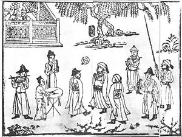

Футбол (від англ. football) — командний вид спорту, в який грають дві команди по одинадцять гравців зі сферичним м'ячем.
Близько 250 мільйонів чоловіків і жінок із більш ніж 200 країн грають у футбол, що робить його найпопулярнішим у світі видом спорту. Футбол — олімпійський вид спорту.
Головні правила
- Грають на футбольному полі завдовжки 90—120 метрів і завширшки 45—90 метрів. На двох протилежних кінцях стоять ворота (завширшки 7,32 м і заввишки 2,44 м), куди потрібно завести м'яча. М'яч, обвід якого повинен бути 68-71 см, а маса — від 396 до 453 грамів. У момент початку гри тиск усередині кулі має бути від 0,6 до 1,1 атмосфери (600—1100 г/см²).
- Кількість запасних гравців визначається регламентом змагання і знаходиться у межах від 3 до 7.
- Рішення судді є остаточними і під час гри не переглядаються, якщо на матчі не задіяна система відеоасистенту арбітра. В такому випадку після прийняття рішення та в разі порушення правил відеоасистент арбітра може запропонувати головному арбітру змінити своє рішення шляхом усної рекомендації або перегляду відеоповтору моменту безпосередньо головним арбітром.
- Футбольний матч складається з двох рівних таймів по 45 хвилин із 15-хвилинною перервою між ними. Після перерви команди міняються воротами.
- За правилом 9 футбольних правил м'яч вважається таким, що «вийшов з гри», якщо він цілком виходить за межі поля, або гра зупинена суддею.
- Голом називається ситуація, коли м'яч цілком перетнув лінію воріт, розташовану між стійками і під перекладиною, й при цьому команда, що забила гол, не порушила правил.
- Порушення караються штрафним або вільним ударом, попередженням або видаленням гравця.
- Пенальті — вид штрафного удару у футболі, що пробивається з відстані 12 ярдів (приблизно 11 метрів від воріт). Тільки воротар команди, що захищається, може знаходитись між м'ячем і воротами під час пробиття цього удару. Пенальті пробивається під час звичайної гри. Схожі удари також пробиваються під час післяматчевих пенальті для визначення команди, що проходить у наступний раунд змагань у випадку, якщо матч закінчується внічию. Хоча процес пробиття цих ударів схожий з пробиттям пенальті, вони офіційно не вважаються пенальті; процес пробиття цих ударів відбувається згідно з іншими правилами.
- Вкидання м'яча є одним із способів відновлення гри. Гол, забитий безпосередньо після вкидання, не зараховується. Вкидання призначається у випадку, коли м'яч повністю перетне бокову лінію поля, з місця, де м'яч перетнув лінію на користь команди-суперниці гравця, що останнім торкнувся м'яча. При вкиданні м'яча не фіксується положення «поза грою».
- Удар від воріт призначається, коли м'яч, останнього разу торкнувшись гравця нападаючої команди, повністю перетнув лінію воріт, і гол не був забитий. Якщо ж м'яч пішов за лінію воріт від гравця команди, що оборонялася, призначається кутовий.
- Кутовий удар є одним з найнебезпечніших стандартних положень. Команди часто відпрацьовують тактику у захисті й нападі при пробитті кутових ударів. Оскільки всі відстані заздалегідь відомі, то грамотно пробитий кутовий удар стає прекрасним шансом забити гол. Найчастіше м'яч з кутового навішують у штрафний майданчик, де високі футболісти або прагнуть одразу пробити по воротах, або скинути м'яч під удар партнерові. Рідше подають м'яч низом, але через велике скупчення гравців при кутових опанувати м'ячем буде складніше.
Історія футболу
Ігри, схожі за основними принципами на сучасний футбол, існували в різних народів з давніх часів. Так, серед претендентів на головний прообраз футболу є стародавні китайці (чжу-чу), давні римляни та греки (гарпастум), середньовічні італійці (кальчо), ацтеки. Проте нинішній футбол є прямим нащадком гри у м'яч в Британії. Перші правила гри, які чітко розрізняли футбол і регбі, були записані 1863 року, хоча перші футбольні клуби з'явилися дещо раніше. Футбол за встановленими правилами здобув популярність наприкінці XIX-го, на початку XX-го століття. Завдяки британським морякам гра потрапила в численні портові міста світу, а звідти поширилася на територію країн Європи, Латинської Америки, Африки, Азії. Потреба в створенні єдиної організації для управління всім світовим футболом стала очевидною на початку 20 століття зі зростанням популярності та кількості міжнародних матчів. Спочатку Футбольна Асоціація Англії очолювала процес врегулювання різних дискусійних питань зі створення, але ця робота була без прогресу; і тому право створити таку організацію випало на долю семи інших європейських держав. ФІФА було засновано 21 травня 1904 в Парижі, саме цей факт став причиною того, що в загальноприйнятих повній та скороченій формі використовується французька назва. Країнами-засновниками були Бельгія, Данія, Іспанія, Нідерланди, Франція, Швейцарія і Швеція; трохи пізніше цього ж року до ФІФА приєдналася Німеччина, а ще через рік Австрія, Англія та Італія. Першим президентом ФІФА був француз Робер Герен. Перші змагання під егідою ФІФА були проведені в 1906 році, хоча особливих успіхів в організації змагань ФІФА не досягла. Цей факт, в комбінації з низкою економічних чинників привів до відставки Герена з поста президента і його заміни Деніелом Вулфоллом з Англії, яка на той час уже стала членом асоціації. Наступні змагання під егідою ФІФА — футбольний турнір на Олімпійських Іграх 1908 року в Лондоні були набагато успішнішими, хоча і виникли певні проблеми пов'язані з участю професійних футболістів в Олімпійських Іграх. Членство ФІФА розширилося за межі Європи з прийняттям Південно-Африканського Союзу в 1909, Аргентини і Чилі в 1912 і Сполучених Штатів в 1913. Під час Першої світової війни ФІФА пережила серйозні випробовування, оскільки багато гравців відправилися на фронт, а можливість міжнародних переїздів для проведення турнірів була сильно обмеженою. Після війни, зі смертю Вулфолла, президентський пост обійняв голландець Карл Хіршманн. ФІФА була врятована від повного розвалу, але ціною цього був вихід з організації усіх чотирьох британських асоціацій, котрі не бажали брати участь у міжнародних змаганнях з їхніми недавніми ворогами. В сучасну епоху за кількістю гравців на всіх рівнях футбол поступається тільки легкій атлетиці й займає перше місце серед командних видів спорту. Сучасна історія футбольного м'яча розпочалась в середині XIX століття, коли Чарльз Гудієр розробив перший м'яч, виготовлений з вулканізованої гуми. Сім років по тому, в 1862 році інший винахідник Річард Ліндон створив першу надувну гумову камеру для м'яча. Пізніше Ліндон розробив насос для камери, і на виставці в Лондоні його винахід здобув золоту медаль у футболі. Сім років після того, в 1863 році була заснована Футбольна асоціація Англії, яка виробила перші уніфіковані футбольні правила, однак в них нічого не згадувалось про футбольний м'яч. У 1872 році офіційно був встановлений стандартний розмір та вага м'яча. До цього розмір та вага м'яча визначались перед матчевими домовленостями обох команд.